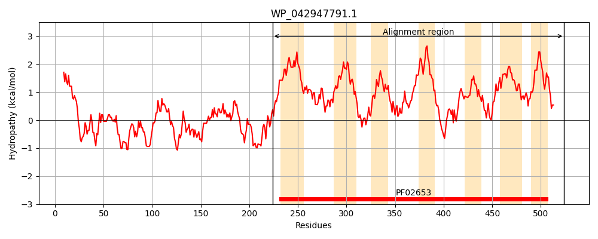
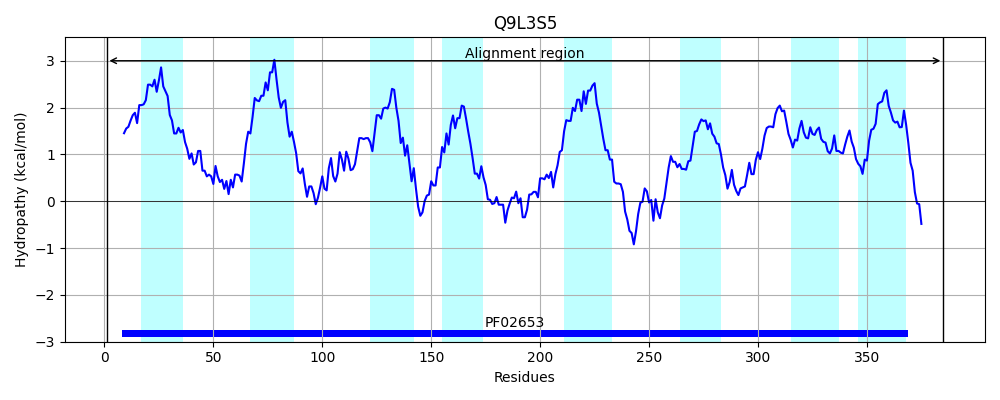
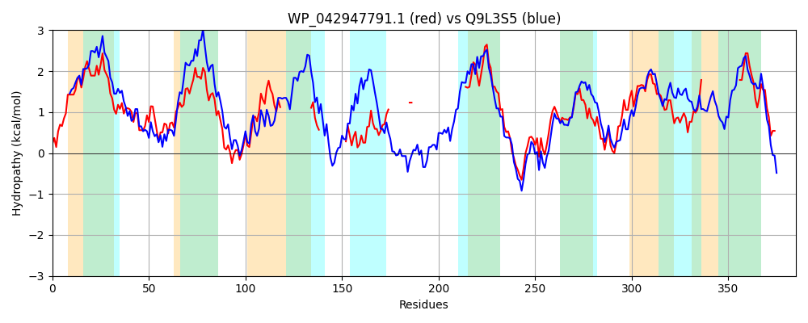

Hit Accession: Q9L3S5
Hit TCID: 3.A.1.4.4
Hit Description: gnl|BL_ORD_ID|18456 gnl|TC-DB|Q9L3S5|3.A.1.4.4 Putative membrane protein (Permease protein of ABC transporter) - Anabaena sp. (strain PCC 7120).
Mach Len: 385
e:0.000000
Query TMS Count : 7
Hit TMS Count: 8
TMS-Overlap Score: 3.750000
Predicted Substrates:CHEBI:9888;urea
BLAST Alignment:
Score: 660 , Bit scores: 258 bits, E-value: 1.5e-81, Alignment length: 385, Percentage identity: 41
Query: 224 LLGDLLGQAFMGLSLGSVLLLAALGLAITYGLLGVINMAHGEMLMIGAYSCWLVQQALAQLAPQWLAFYPLVALPVAFLVTAGIGMALERTIIRHLYGRPLETLLATWGISLMLIQLVR---------------MLFGA-------------QNVEVANPAWLSGGVQVLPNLIL----------PW---------------------------NRLAVLAFVLLVLCFTWLILNRTRLGMNVRAVTQNRAMAACCGVPTGRVDMLAFGLGSGIAGLGGVALSQLGNVGPELGQGYIIDSFLVVVLGGVGQLAGSVAAAFGLGIFNKILEPQMGAVL-------------------GKILILVMIILFIQKRPQGLFALKGRVID 524
+L L F G+S+GSVLL+AALGLAI +GL+GVINMAHGE++M GAY+ ++VQ QL W Y +AL +AF+ TA IG+ LER +IR+LYGRPLETLLATWG+SL+ Q VR + FG +N VA LS GV + +L PW RL ++ ++ + +L L R+ G+ +RAVTQNR+M+AC G+PT +VD + F LGSG+AG+ G A+S LG+VGP GQ YIID+F+VVV+GGVG LAG++ AA G+G N ++ A+L K+L+ V+II+F+Q +P G+F KGR +D
Sbjct: 1 MLTGFLDAVFNGISIGSVLLIAALGLAIIFGLMGVINMAHGELMMFGAYATFVVQNGCKQLGGFWFEIYIFLALIIAFVFTAFIGLILERGVIRYLYGRPLETLLATWGVSLIFQQFVRSVNWVLIIGLGLFSLLFFGGLWILNSRANLERIRNWVVAVIFLLSLGVTITTGNVLTQTYQLAVTQPWFGAQNVDVTAPSWLQTGISLGGVQLPFARLFIIVLTIICVGGIYLFLQRSSWGLRIRAVTQNRSMSACLGIPTEKVDAITFALGSGLAGVAGCAISLLGSVGPNTGQNYIIDTFMVVVVGGVGNLAGTIVAALGIGTANFLIGSGTLALLFSPVKPLADLLTFFATTSMAKVLVFVLIIVFLQWKPGGMFPQKGRSVD 385 | Protein Hydropathy Plots: |
|---|
|  |  |
Pairwise Alignment-Hydropathy Plot:
|
|---|
|  |